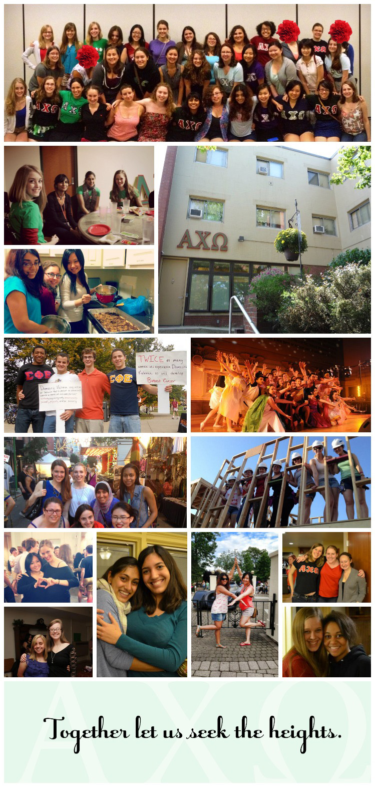

<h1>Alpha Chi Omega at Carnegie Mellon University</h1>

Alpha Chi Omega (AX&#937) was founded over 125 years ago and to date has initiated over 215,000 women. One of the first Greek-letter societies for women, Alpha Chi Omega holds its place in the history books as one of the largest women's organizations today. We are "Real. Strong. Women."

Explore our website to learn more about Alpha Chi Omega and AX&#937; at Carnegie Mellon University (the Kappa Nu chapter).

